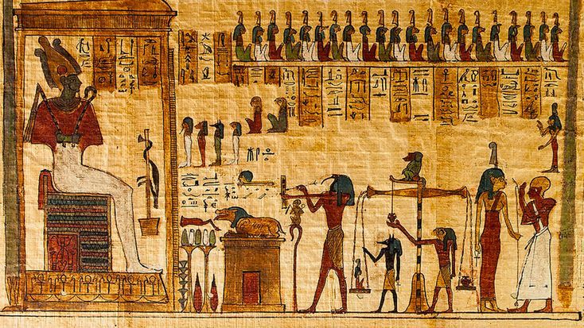

GODS • BELIEFS • AFTERLIFE
Enter a world of powerful gods, sacred temples and beliefs surrounding life and the afterlife.
THE DIVINE WORLD
Religion was deeply connected to every part of Ancient Egyptian life. Egyptians worshipped many gods and believed strongly in an afterlife.

Egyptians worshipped gods associated with nature, protection, creation and the afterlife.

Temples were important religious centers where rituals and ceremonies were performed.

Egyptians believed that life continued after death, influencing their burial traditions.